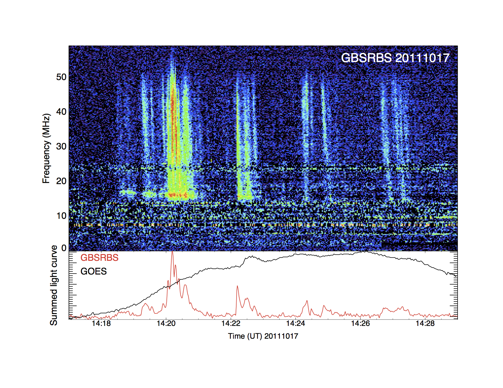
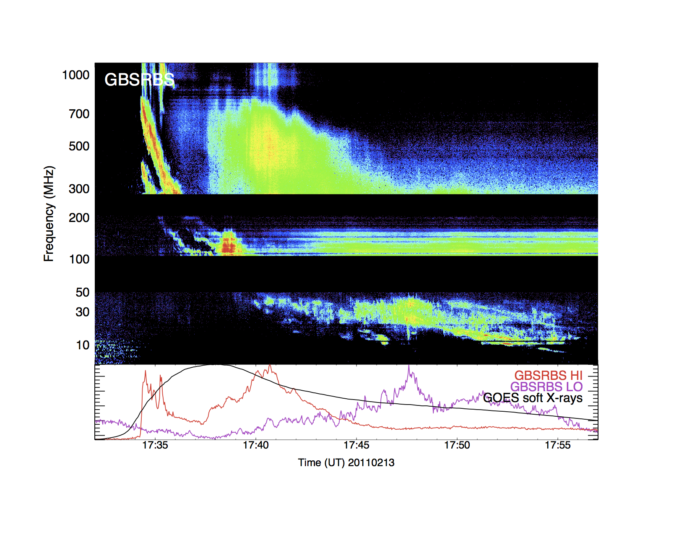
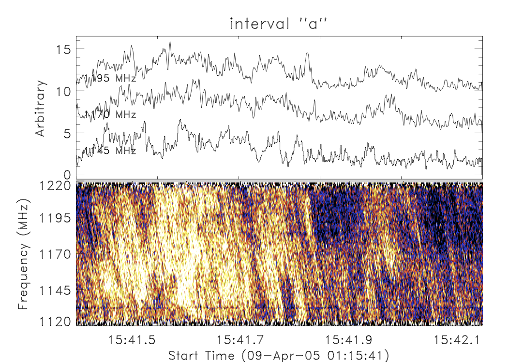
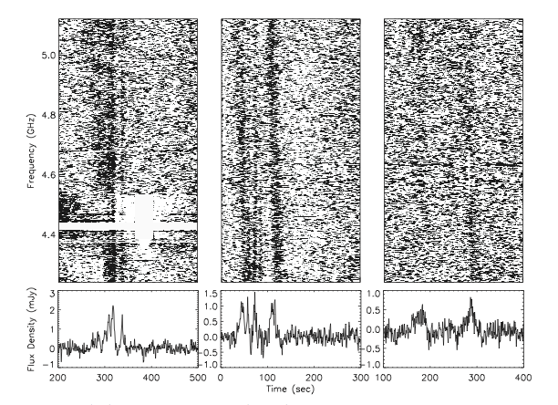

Particles accelerated in the presence of the magnetic fields produce radio emissions, seen in the Sun in a wide variety of phenomena, and also observed in nearby active stars. As described in Güdel (2002), it is now known that stellar radio emission occurs across the HR diagram, with a variety of manifestations. Those objects in the cool half of the HR diagram, lying roughly near the main sequence and with spectral types F and later, display predominantly nonthermal emission. This nonthermal emission is intimately connected with the presence of magnetic fields whose dynamical rearrangement during magnetic reconnection processes can lead to transient increases in associated emissions. For the flare stars working group we concentrate on three classes of cool stellar objects which have displayed evidence of coherent radio emission, and are likely sources of transient metric radio emission: active binaries (cool close binaries whose tidal locking enforces fast rotation and enhanced magnetic activity); dMe flare stars (M dwarf flare stars with a rich history of producing dramatic magnetic-reconnection events from metric to hard X-ray wavelengths); and ultracool dwarfs (dwarfs of spectral type M7 and cooler which display evidence of strong surface magnetic fields and pulsed radio emission).
Observations of cool stars at radio wavelengths trace the dynamics of interacting magnetic fields through the action of accelerated particles. Accelerated particles are a main component of magnetic reconnection whose importance is not appreciated in the stellar community, as they are generally difficult to observe. Observations are needed which can return direct constraints on the nature of accelerated electrons in stellar flares, which can be obtained via analysis of the spectral and temporal properties of low frequency radio bursts. White light stellar flares have historically been the way in which stellar flares were studied, although stellar flares have now been detected at wavelengths from meter-wave (Kundu & Shevgaonkar 1988) to hard X-rays (Osten et al. 2007). The inability of a solar-type electron beam input in stellar flares (Allred et al. 2006) suggests that the accelerated particles present in stellar flares may represent a break with the solar model.
Solar flares have associated coronal mass ejections which typically produce slowly drifting radio bursts at meter wavelengths; magnetically active stars with a high flaring rate should have a similarly high rate of mass ejections. Studies in the meter wavelength domain can thus provide an alternate means of constraining the amount of mass lost in cool stars, an important but difficult measurement to make. This is crucial input to studies of planetary habitability, as a major uncertainty in the effect of large stellar flares on planetary (Earthlike) atmospheres is the action of energetic particles (Segura et al. 2010) and the frequency of coronal mass ejections (Khodachenko et al. 2007). The field of radio transient studies is a growing one, and further characterization of known sources of transient radio emission is crucial to enable better identification and separation of new, unknown classes of transients, particularly in instances where the phase space of measurable transient characteristics may overlap.
Click for larger versions.
|  |
Example type III solar radio burst as seen with the Green Bank Solar Radio Burst Spectrometer on 2011 October 17 at metric wavelengths. The rapid drift of the structures with time is clear, as is their occurrence during the impulsive phase of a solar flare (GOES X-ray flux increasing; bottom panel). |
|  |
Example metric-decimetric emission showing the evolution of a type II burst seen on 2011 Feb. 13, along with its harmonic structure, and a diffuse type IV continuum emission. The agility of LOFAR will enable the study of both types of phenomena in stars. |
|  |
Figure 4 of Osten & Bastian (2008), showing the highly structured nature of a stellar radio burst at dm wavelengths as viewed in the frequency-time domains. The sub-structure appears to consist of individual radiating elements (each ~2 ms in duration at a given frequency) which proceed from high frequency to low frequency, and have the same sign and sense of frequency drift. Consideration of the timescales and frequencies involved led Osten & Bastian to conclude that they were seeing accelerated particles drifting along magnetic fields in the corona. At the lower frequencies/longer wavelengths probed by LOFAR, we will see many examples of the action of accelerated particles in stellar atmospheres such as this. |
|  |
Figure 1 of Route & Wolszczan (2012) depicting dynamic spectra of bursting radio emission from a T6.5 dwarf seen at cm wavelengths, demonstrating the continuation of coherent bursting radio behavior from the stellar regime into the brown dwarf regime. LOFAR's agility will enable constraints on the magnetic field of substellar objects through detection and study of such bursts. |
{kind=link}
{kind=link}
{kind=link}
{kind=link}